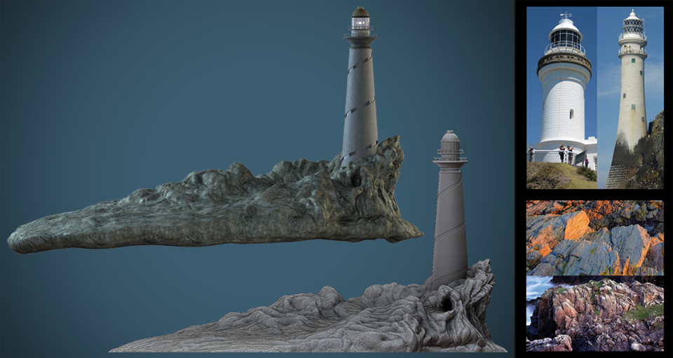
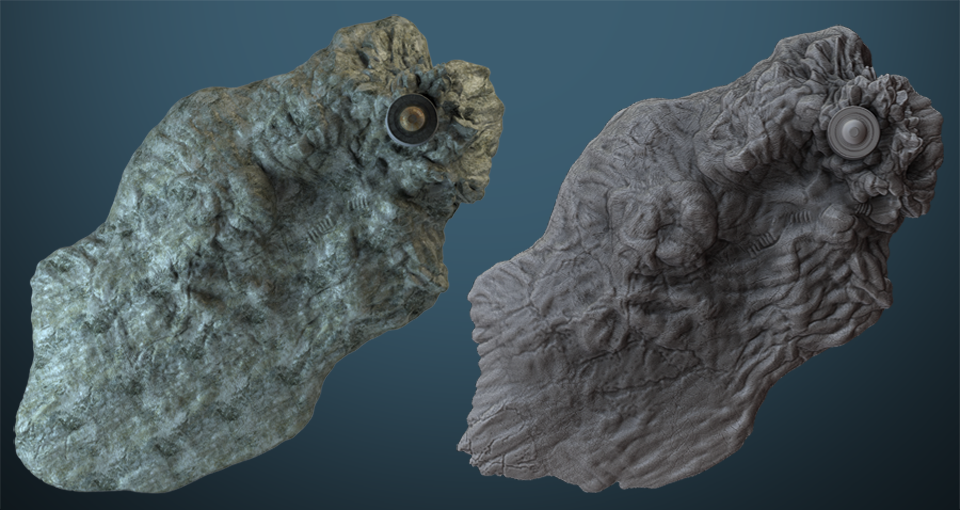

I was brought on to concept the island and light house and produce a high quality model for the sequence. As the project progressed and things were approved I was asked to continue with directing the camera movement and overall feel of the sequence. This was a great opportunity to grow and experiment with artistic and technical issues.

The solid stripe window was the biggest constraint from the studio as this allowed for the light to move unbroken. References were pulled from several different lighthouses. The first concepts of the lighthouse were extreme and almost challenging the original look of a lighthouse, so it was dialed back.

The opening sequence for Luminous Pictures was completed in collaboration with Luke Fraser.